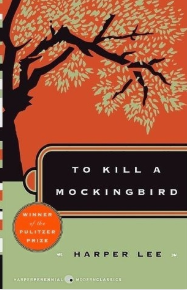
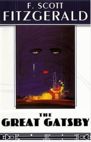
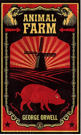
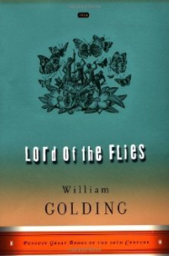
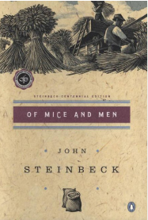
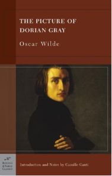
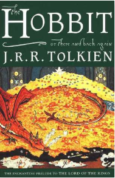
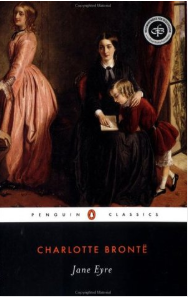

Popular Classic Books
Pride and Prejudice
by Jane Austen
Since its immediate success in 1813, Pride and Prejudice has remained one of the most popular novels in the English language. Jane Austen called this brilliant work "her own darling child" and its vivacious heroine, Elizabeth Bennet, "as delightful a creature as ever appeared in print." The romantic clash between the opinionated Elizabeth and her proud beau, Mr. Darcy, is a splendid performance of civilized sparring. And Jane Austen's radiant wit sparkles as her characters dance a delicate quadrille of flirtation and intrigue, making this book the most superb comedy of manners of Regency England.
The story follows the main character, Elizabeth Bennet, as she deals with issues of manners, upbringing, morality, education, and marriage in the society of the landed gentry of the British Regency. Elizabeth is the second of five daughters of a country gentleman living near the fictional town of Meryton in Hertfordshire, near London.Page 2 of a letter from Jane Austen to her sister Cassandra (11 June 1799) in which she first mentions Pride and Prejudice, using its working title First Impressions.Set in England in the early 19th century, Pride and Prejudice tells the story of Mr and Mrs Bennet's five unmarried daughters after the rich and eligible Mr Bingley and his status-conscious friend, Mr Darcy, have moved into their neighbourhood. While Bingley takes an immediate liking to the eldest Bennet daughter, Jane, Darcy has difficulty adapting to local society and repeatedly clashes with the second-eldest Bennet daughter, Elizabeth.Though Austen set the story at the turn of the 19th century, it retains a fascination for modern readers, continuing near the top of lists of "most loved books." It has become one of the most popular novels in English literature, selling over 20 million copies, and receives considerable attention from literary scholars. Modern interest in the book has resulted in a number of dramatic adaptations and an abundance of novels and stories imitating Austen's memorable characters or themes.
To Kill A Mockingbird
by Harper Lee
The unforgettable novel of a childhood in a sleepy Southern town and the crisis of conscience that rocked it, To Kill A Mockingbird became both an instant bestseller and a critical success when it was first published in 1960. It went on to win the Pulitzer Prize in 1961 and was later made into an Academy Award-winning film, also a classic. Compassionate, dramatic, and deeply moving, To Kill A Mockingbird takes readers to the roots of human behavior - to innocence and experience, kindness and cruelty, love and hatred, humor and pathos. Now with over 18 million copies in print and translated into forty languages, this regional story by a young Alabama woman claims universal appeal. Harper Lee always considered her book to be a simple love story. Today it is regarded as a masterpiece of American literature.
The novel tells the story of the lives of Scout and her brother, Jem, children growing up in Maycomb, Alabama during the 1930s. Along with their summer friend, Dill, the children become entranced with the idea of getting a glimpse of their reclusive and unseen neighbor, Boo Radley. Meanwhile, their attorney father, Atticus Finch, has decided to defend Tom Robinson, a black man falsely accused of raping a local white woman. The children get caught up in the trial, in which Tom is convicted and eventually killed trying to escape from prison. Jem and Scout become the targets of Bob Ewell, the victim’s father, who tries to kill them one Halloween night on their way home from school, but Boo Radley—who the children have never seen—shows up to save them, killing Bob in the process.
The Great Gatsby
by F. Scott Fitzgerald
F. Scott Fitzgerald's third book, stands as the supreme achievement of his career. This exemplary novel of the Jazz Age has been acclaimed by generations of readers. The story is of the fabulously wealthy Jay Gatsby and his new love for the beautiful Daisy Buchanan, of lavish parties on Long Island at a time when The New York Times noted "gin was the national drink and sex the national obsession," it is an exquisitely crafted tale of America in the 1920s.
Fitzgerald-inspired by the parties he had attended while visiting Long Island's north shore-began planning the novel in 1923, desiring to produce, in his words, "something new-something extraordinary and beautiful and simple and intricately patterned." Progress was slow, with Fitzgerald completing his first draft following a move to the French Riviera in 1924. His editor, Maxwell Perkins, felt the book was vague and persuaded the author to revise over the next winter. Fitzgerald was repeatedly ambivalent about the book's title and he considered a variety of alternatives, including titles that referenced the Roman character Trimalchio; the title he was last documented to have desired was Under the Red, White, and Blue. In its first year, the book sold only 20,000 copies. Fitzgerald died in 1940, believing himself to be a failure and his work forgotten. However, the novel experienced a revival during World War II, and became a part of American high school curricula and numerous stage and film adaptations in the following decades. Today, The Great Gatsby is widely considered to be a literary classic and a contender for the title "Great American Novel". In 1998, the Modern Library editorial board voted it the 20th century's best American novel and second best English-language novel of the same time period.
1984
by George Orwell
Among the seminal texts of the 20th century, Nineteen Eighty-Four is a rare work that grows more haunting as its futuristic purgatory becomes more real. Published in 1949, the book offers political satirist George Orwell's nightmarish vision of a totalitarian, bureaucratic world and one poor stiff's attempt to find individuality. The brilliance of the novel is Orwell's prescience of modern life--the ubiquity of television, the distortion of the language--and his ability to construct such a thorough version of hell. Required reading for students since it was published, it ranks among the most terrifying novels ever written.
The book is set in 1984 in Oceania, one of three perpetually warring totalitarian states (the other two are Eurasia and Eastasia). Oceania is governed by the all-controlling Party, which has brainwashed the population into unthinking obedience to its leader, Big Brother. The Party has created a propagandistic language known as Newspeak, which is designed to limit free thought and promote the Party’s doctrines. Its words include doublethink (belief in contradictory ideas simultaneously), which is reflected in the Party’s slogans: “War is peace,” “Freedom is slavery,” and “Ignorance is strength.” The Party maintains control through the Thought Police and continual surveillance. The book’s hero, Winston Smith, is a minor party functionary living in a London that is still shattered by a nuclear war that took place not long after World War II. He belongs to the Outer Party, and his job is to rewrite history in the Ministry of Truth, bringing it in line with current political thinking. However, Winston’s longing for truth and decency leads him to secretly rebel against the government. He embarks on a forbidden affair with Julia, a like-minded woman, and they rent a room in a neighbourhood populated by Proles (short for proletariats). Winston also becomes increasingly interested in the Brotherhood, a group of dissenters. Unbeknownst to Winston and Julia, however, they are being watched closely (ubiquitous posters throughout the city warn residents that “Big Brother is watching you.”).
Animal Farm
by George Orwell
A farm is taken over by its overworked, mistreated animals. With flaming idealism and stirring slogans, they set out to create a paradise of progress, justice, and equality. Thus the stage is set for one of the most telling satiric fables ever penned –a razor-edged fairy tale for grown-ups that records the evolution from revolution against tyranny to a totalitarianism just as terrible. When Animal Farm was first published, Stalinist Russia was seen as its target. Today it is devastatingly clear that wherever and whenever freedom is attacked, under whatever banner, the cutting clarity and savage comedy of George Orwell’s masterpiece have a meaning and message still ferociously fresh.
Old Major, a prize-winning boar, gathers the animals of the Manor Farm for a meeting in the big barn. He tells them of a dream he has had in which all animals live together with no human beings to oppress or control them. He tells the animals that they must work toward such a paradise and teaches them a song called “Beasts of England,” in which his dream vision is lyrically described. The animals greet Major’s vision with great enthusiasm. When he dies only three nights after the meeting, three younger pigs—Snowball, Napoleon, and Squealer—formulate his main principles into a philosophy called Animalism. Late one night, the animals manage to defeat the farmer Mr. Jones in a battle, running him off the land. They rename the property Animal Farm and dedicate themselves to achieving Major’s dream. The cart-horse Boxer devotes himself to the cause with particular zeal, committing his great strength to the prosperity of the farm and adopting as a personal maxim the affirmation “I will work harder.”
The Lord of the Flies
by William Golding
Since it was first published in 1954, William Golding's classic debut novel has remained a stark allegory of civilization, survival, and human nature. As dystopian stories like Hunger Games and Battle Royale surge in popularity, this haunting tale of a group of young boys stranded on a desert island still captivates schoolchildren around the world, raising timeless and profound questions about how easily society can slip into chaos and savagery when rules and order have been abandoned.
When a plane crashes on a remote island, a small group of schoolboys are the sole survivors. From the prophetic Simon and virtuous Ralph to the lovable Piggy and brutish Jack, each of the boys attempts to establish control as the reality- and brutal savagery-of their situation sets in. A teacher himself, Golding clearly understood how to interest children with a gripping story and strong, sympathetic characters. The novel serves as a catalyst for thought-provoking discussion and analysis of universal issues, not only concerning the capabilities of humans for good and evil and the fragility of moral inhibition, but beyond. The boys' struggle to find a way of existing in a community with no fixed boundaries invites readers to evaluate the concepts involved in social and political constructs and moral frameworks. Symbolism is strong throughout, revealing both the boys' capacity for empathy and hope, as well as illuminating the darkest corners of the human spirit. Ideas of community, leadership, and the rule of law are called into question as the reader has to consider who has a right to power, why, and what the consequences of the acquisition of power may be.
Of Mice And Men
by John Steinbeck
The compelling story of two outsiders striving to find their place in an unforgiving world. Drifters in search of work, George and his simple-minded friend Lennie have nothing in the world except each other and a dream--a dream that one day they will have some land of their own. Eventually they find work on a ranch in California’s Salinas Valley, but their hopes are doomed as Lennie, struggling against extreme cruelty, misunderstanding and feelings of jealousy, becomes a victim of his own strength. Tackling universal themes such as the friendship of a shared vision, and giving voice to America’s lonely and dispossessed, Of Mice and Men has proved one of Steinbeck’s most popular works, achieving success as a novel, a Broadway play and three acclaimed films.
They are an unlikely pair: George is "small and quick and dark of face"; Lennie, a man of tremendous size, has the mind of a young child. Yet they have formed a "family," clinging together in the face of loneliness and alienation. Laborers in California's dusty vegetable fields, they hustle work when they can, living a hand-to-mouth existence. For George and Lennie have a plan: to own an acre of land and a shack they can call their own. When they land jobs on a ranch in the Salinas Valley, the fulfillment of their dream seems to be within their grasp. But even George cannot guard Lennie from the provocations of a flirtatious woman, nor predict the consequences of Lennie's unswerving obedience to the things George taught him.
The Picture of Dorian Gray
by Oscar Wild
Oscar Wilde brings his enormous gifts for astute social observation and sparkling prose to The Picture of Dorian Gray, his dreamlike story of a young man who sells his soul for eternal youth and beauty. This dandy, who remains forever unchanged; petulant, hedonistic, vain, and amoral; while a painting of him ages and grows increasingly hideous with the years, has been horrifying, enchanting, obsessing, even corrupting readers for more than a hundred years.
Taking the reader in and out of London drawing rooms, to the heights of aestheticism, and to the depths of decadence, The Picture of Dorian Gray is not only a melodrama about moral corruption. Laced with bon mots and vivid depictions of upper-class refinement, it is also a fascinating look at the milieu of Wilde’s fin-de-siècle world and a manifesto of the creed Art for Art’s Sake.”
The ever-quotable Wilde, who once delighted London with his scintillating plays, scandalized readers with this, his only novel. Upon publication, Dorian was condemned as dangerous, poisonous, stupid, vulgar, and immoral, and Wilde as a driveling pedant.” The novel, in fact, was used against Wilde at his much-publicized trials for gross indecency,” which led to his imprisonment and exile on the European continent. Even so, The Picture of Dorian Gray firmly established Wilde as one of the great voices of the Aesthetic movement, and endures as a classic that is as timeless as its hero.
The Hobbit or There and Back Again
by J.R.R. Tolkien
Written for J.R.R. Tolkien’s own children, The Hobbit met with instant critical acclaim when it was first published in 1937. Now recognized as a timeless classic, this introduction to the hobbit Bilbo Baggins, the wizard Gandalf, Gollum, and the spectacular world of Middle-earth recounts of the adventures of a reluctant hero, a powerful and dangerous ring, and the cruel dragon Smaug the Magnificent. The text in this 372-page paperback edition is based on that first published in Great Britain by Collins Modern Classics (1998), and includes a note on the text by Douglas A. Anderson (2001).
Bilbo Baggins is a hobbit who enjoys a comfortable, unambitious life, rarely traveling any farther than his pantry or cellar. But his contentment is disturbed when the wizard Gandalf and a company of dwarves arrive on his doorstep one day to whisk him away on an adventure. They have launched a plot to raid the treasure hoard guarded by Smaug the Magnificent, a large and very dangerous dragon. Bilbo reluctantly joins their quest, unaware that on his journey to the Lonely Mountain he will encounter both a magic ring and a frightening creature known as Gollum.
“A glorious account of a magnificent adventure, filled with suspense and seasoned with a quiet humor that is irresistible . . . All those, young or old, who love a fine adventurous tale, beautifully told, will take The Hobbit to their hearts.” – New York Times Book Review
Jane Eyre
by Charlotte Brontë
Initially published under the pseudonym Currer Bell in 1847, Charlotte Brontë’s Jane Eyreerupted onto the English literary scene, immediately winning the devotion of many of the world’s most renowned writers, including William Makepeace Thackeray, who declared it a work “of great genius.” Widely regarded as a revolutionary novel, Brontë’s masterpiece introduced the world to a radical new type of heroine, one whose defiant virtue and moral courage departed sharply from the more acquiescent and malleable female characters of the day. Passionate, dramatic, and surprisingly modern, Jane Eyre endures as one of the world’s most beloved novels.
Orphaned as a child, Jane has felt an outcast her whole young life. Her courage is tested once again when she arrives at Thornfield Hall, where she has been hired by the brooding, proud Edward Rochester to care for his ward Adèle. Jane finds herself drawn to his troubled yet kind spirit. She falls in love. Hard. But there is a terrifying secret inside the gloomy, forbidding Thornfield Hall. Is Rochester hiding from Jane? Will Jane be left heartbroken and exiled once again?